TOPIC 12
EVOLUTIONARY LOGIC
From Molecular Damage to Variant Calling
Why Are We Starting This?
When DNA gets damaged and the cell copies it before fixing the mistake, a temporary chemical error becomes a permanent mutation.
But sequencing machines don't see that biological damage. They don't know the history of the cell. They just output a text file full of letters (A, C, G, T).
This creates a huge gap between the physical reality of a cell and the digital data we analyze on a computer. To properly interpret bioinformatics data, we need to trace exactly how a physical chemical event turns into a statistical variant call.
Where Does This Fit?
This topic bridges molecular biology and computational data science. To interpret sequence data accurately, we must track the information through four distinct phases:
Cytosine deaminates into Uracil
Repair fails, and replication occurs
Sequencer records physical signals
Algorithm infers the base and writes a VCF
The Physical State of the DNA
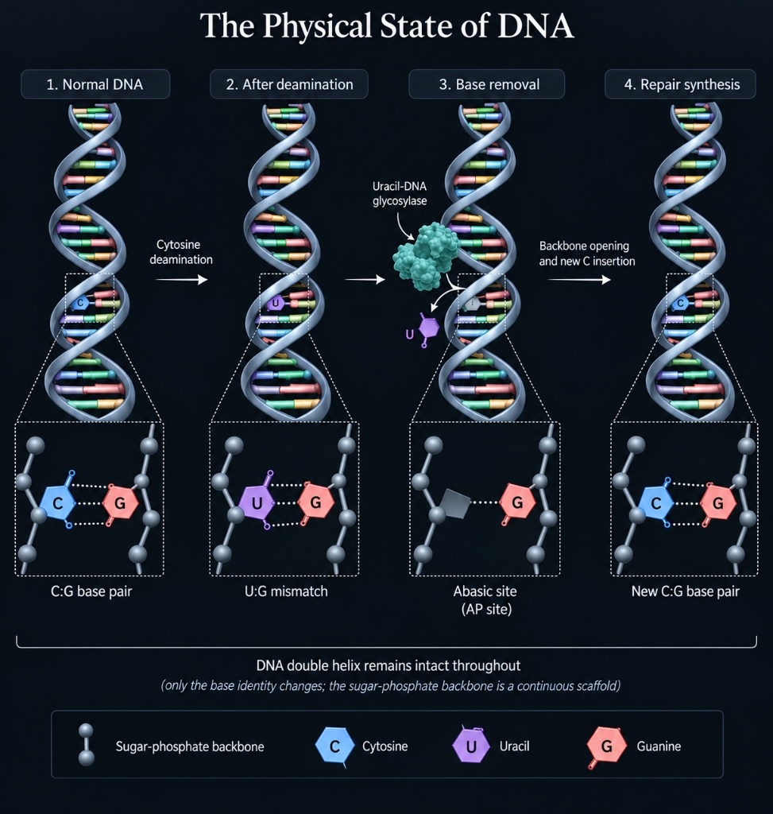
Let’s trace the physical event. Following deamination, a normal C:G pair becomes a U:G mismatch.
The DNA double helix remains completely intact; only the chemical identity of a single base has changed. Therefore, DNA damage does not inherently mean a DNA strand break. The sugar-phosphate backbone acts as a continuous scaffold.
Repair enzymes, such as uracil-DNA glycosylase, cleave the abnormal base from the sugar. This creates an abasic site while leaving the backbone untouched. Only afterward is the backbone opened to insert a new Cytosine.
Damage vs. Mutation
This distinction is fundamental. Chemical damage (\( C \rightarrow U \)) is a transient lesion. The original sequence information remains physically present on the complementary strand. If repaired (\( U:G \rightarrow C:G \)), no mutation occurs.
However, if cellular replication occurs prior to repair, DNA polymerase will pair the Uracil with an Adenine. The subsequent replication locks this into a T:A base pair.
A mutation is the heritable consequence of unrepaired damage. Once the change is replicated into a T:A pair, the cell's repair machinery can no longer identify it as an error.
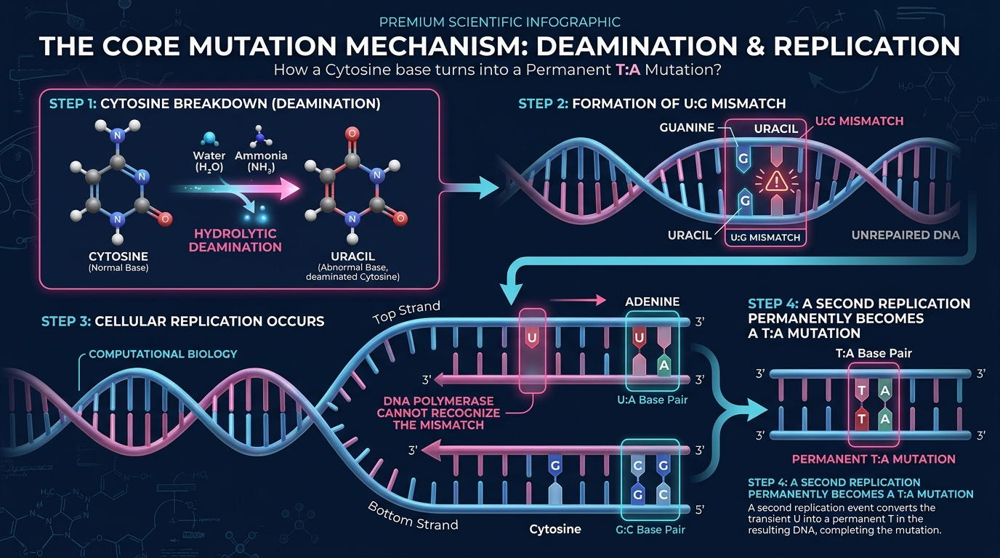
The Epigenetic Trap: 5-Methylcytosine
To help control which genes are turned on or off, cells often attach a small chemical tag (called a methyl group) to Cytosine. We call this tagged version 5-methylcytosine (5mC).
This tag is incredibly useful for biology, but it creates a dangerous trap.
Earlier, we saw that when normal Cytosine breaks down, it turns into Uracil. The cell easily catches this mistake because Uracil doesn't belong in DNA. But when a tagged Cytosine (5mC) breaks down, the extra tag changes the chemistry. Instead of turning into Uracil, it turns directly into Thymine.
This is a massive problem. The original C:G pair is now a T:G mismatch.
When the cell's repair enzymes patrol the DNA and find this T:G pair, they get confused. They know a mistake happened because T should only pair with A. But because both Thymine and Guanine are perfectly normal DNA letters, the repair system cannot easily tell which one is the original letter and which one is the imposter.
Because the repair machinery struggles to solve this puzzle, it often fails to fix it. As a result, these tagged regions of DNA are major hotspots for mutations in the human genome.
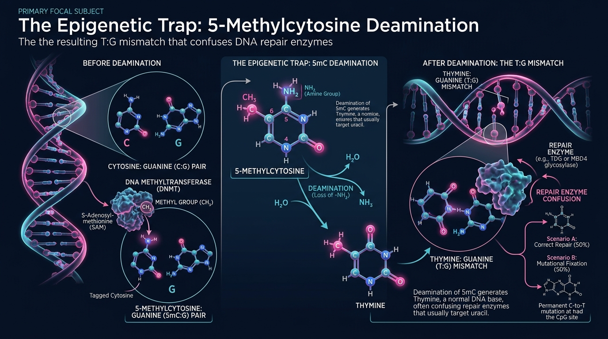
The Bioinformatics Deep Dive
Sequencing Does Not See "C"
In a FASTQ file, we observe discrete sequence strings like ACGTACCGT. However, a sequencing instrument does not directly read characters. It measures continuous, raw analog signals over time—such as fluorescent emissions (Illumina) or electrical current shifts (Oxford Nanopore).
To transform this physical signal into digital text, the computational system uses a base-calling algorithm. This statistical process performs three critical operations:
- Signal De-noising: The algorithm corrects for physical artifacts. For optical sequencers, it corrects for "cross-talk" (overlapping emission spectra of different fluorescent dyes) and "phasing" (where some DNA molecules in a cluster fall out of sync, blurring the signal across cycles).
- Probabilistic Inference: At each sequencing cycle, the algorithm evaluates the processed signal against statistical models (often relying on machine learning or hidden Markov models). It calculates the probability distribution for all four possible nucleotides.
- The Base Call: The algorithm selects the nucleotide with the highest probability.
Once the base is inferred, the algorithm must report its statistical confidence. It calculates a Phred Quality Score using the formula \( Q = -10 \log_{10}(P) \), where \( P \) is the probability that the base call is incorrect. For example, a Q30 score indicates a 1 in 1,000 probability of an incorrect call (99.9% technical accuracy).
Crucially, a Phred score only measures the instrument's technical confidence in interpreting the immediate physical signal. If the original DNA molecule was chemically damaged (e.g., C deaminated to U) before it ever entered the machine, the sequencer will read the damaged base perfectly. It will output a T with a flawless Q30 score. The computational system assumes the input biology was intact, highlighting the gap between technical signal processing and biological reality.
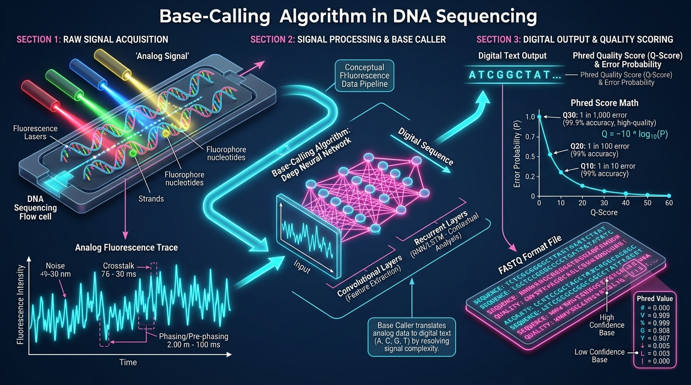
Three Levels of the Same Event
To analyze sequence data accurately, we must separate a mutation into three distinct conceptual levels:
Level 1 — Molecular
\( C:G \rightarrow U:G \)
The physical chemical damage event.
Level 2 — Genetic
\( C:G \rightarrow T:A \)
The stable, heritable sequence change after replication.
Level 3 — Computational
REF=C, ALT=T
The statistical observation reported in a Variant Call Format (VCF) file.
The VCF file reports a mathematical difference between the sample reads and the reference genome. It does not encode the underlying molecular mechanism (deamination) or the timing of the event.
Statistical Inference: The Bayesian Variant Caller
Assume a reference genome position is C. We sequence a sample and obtain 100 reads covering this coordinate: 80 reads report C and 20 reads report T. The resulting Allele Fraction (AF) is 20%.
Applying a hard numerical threshold (e.g., "call a variant if AF > 10%") is a flawed methodology. An observation of 1 T in 5 reads yields a 20% AF, exactly as observing 2,000 Ts in 10,000 reads yields a 20% AF. However, the statistical confidence in these two scenarios is vastly different due to the depth of coverage.
Because sequencing instruments have a known baseline error rate (e.g., \( \epsilon = 0.001 \)), they consistently generate random false-positive base calls. A variant caller must therefore determine whether the observed alternative bases significantly exceed this expected technical noise. To accomplish this, modern callers do not use arbitrary cutoffs; they use probabilistic models driven by Bayes’ Theorem.
The algorithm calculates the posterior probability that a true biological variant exists given the observed read data: \( P(\text{variant}\mid\text{reads}) \).
The core of this statistical inference relies on computing a likelihood ratio that compares two opposing hypotheses:
- \( P(D|V) \): The probability of observing exactly this read data if the patient truly possesses the variant (the signal hypothesis).
- \( P(D|\neg V) \): The probability of observing this exact read data if the patient sequence perfectly matches the reference, and all alternative bases are purely technical errors (the noise hypothesis).
By evaluating this ratio, the algorithm mathematically quantifies how strongly the sequencing data supports a true biological mutation over a technological artifact. Only when this statistical evidence is sufficiently robust does the caller formally report the variant.
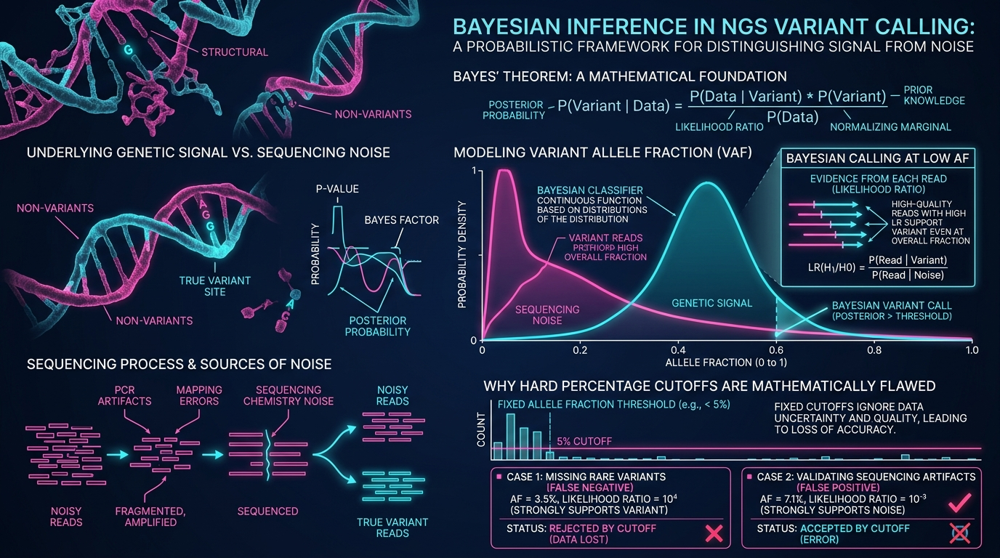
4 Key Bioinformatics Applications
1. Mutation Spectra & Trinucleotide Context
Instead of analyzing individual mutations, we can aggregate millions of substitutions to identify biological mechanisms. If C>T transitions are highly enriched, it indicates a specific mutagenic process.
To maximize this information, we record the flanking sequence context: 5'-A[C>T]G-3'.
Because there are 4 possible upstream and 4 possible downstream bases, a single substitution type can occur in 16 trinucleotide contexts. Multiplying the 6 canonical substitutions by 16 contexts generates a 96-channel mutation spectrum.
This structured profile acts as a biological signature. For example, UV damage consistently produces C>T mutations specifically at dipyrimidine (CC or TC) sites.
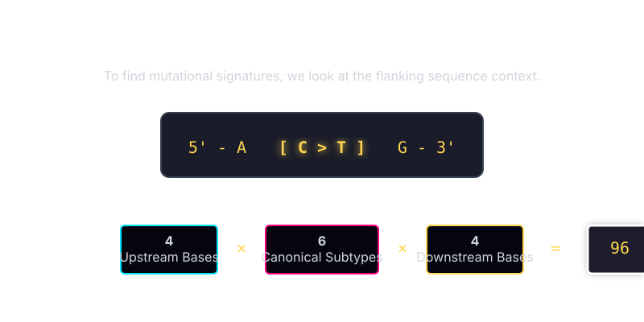
2. Reverse-Complement Normalization
Because DNA is double-stranded, a C>T mutation on the forward strand is physically identical to a G>A mutation on the reverse strand.
To prevent double-counting, computational tools normalize substitutions to a canonical pyrimidine representation. Whenever an algorithm detects a G>A variant, it computes the reverse-complement to classify it as C>T (adjusting the flanking bases accordingly).
This step condenses the 12 possible base substitutions into 6 canonical classes, ensuring the statistical models accurately reflect the physical structure of the DNA duplex without artificially inflating the data.
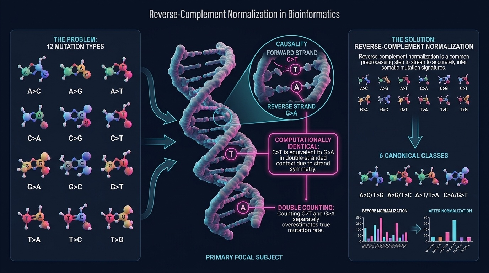
3. The Hidden Assumptions in a VCF
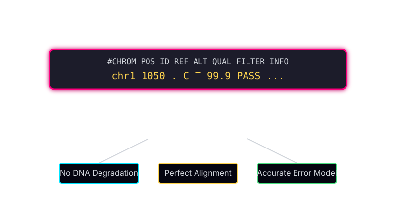
A variant call (REF=C, ALT=T) relies on multiple underlying assumptions: the DNA was not degraded during preparation, the base-calling error models are accurate, and the reads aligned to the correct genomic coordinate.
Alignment is a frequent source of error. The human genome contains duplicated pseudogenes that share high sequence similarity with functional genes. If a read from a pseudogene maps incorrectly to the target gene, the slight sequence divergence will present as a heterozygous mutation.
The variant caller will output a variant, but the observation is entirely an alignment artifact.
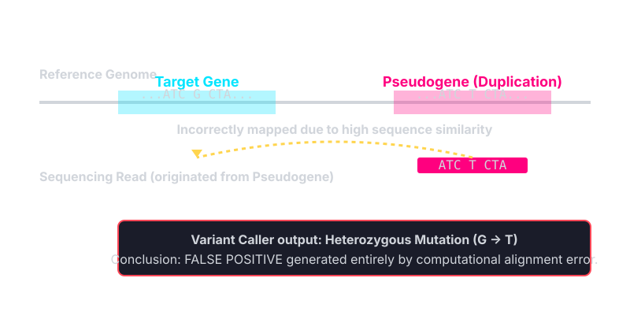
4. PCR Duplicates vs. Independent Molecules
If a damaged DNA molecule (e.g., containing U) undergoes PCR amplification prior to sequencing, it generates multiple identical copies.
The sequencer may output 20 reads containing a T. While this appears as strong statistical evidence for a variant, the 20 reads are technical duplicates representing exactly one original physical molecule.
To resolve this, pipelines use Unique Molecular Identifiers (UMIs)—random barcodes attached to molecules prior to amplification. If 20 T reads share the same UMI, the algorithm collapses them into a single observation, recovering the true independent molecule count.
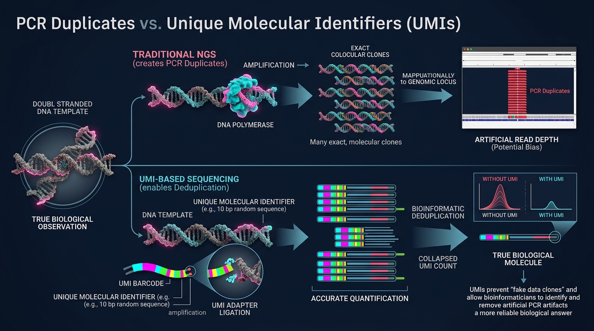
The Bioinformatics Pipeline as a Chain of Filters
The bioinformatics pipeline progressively transforms physical reality into computational data. Every stage acts as a filter. If an upstream process is compromised (e.g., DNA degradation causing widespread deamination), downstream algorithms will execute correctly but yield false biological conclusions.
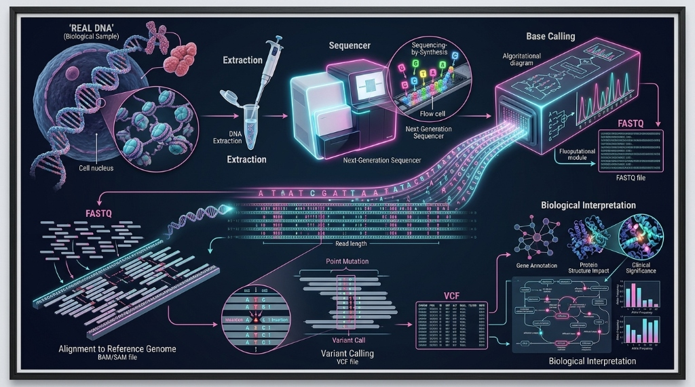
Understanding a molecular detail like the methyl group on thymine is essential, as it demonstrates how molecular chemistry inherently dictates and shapes computational data.